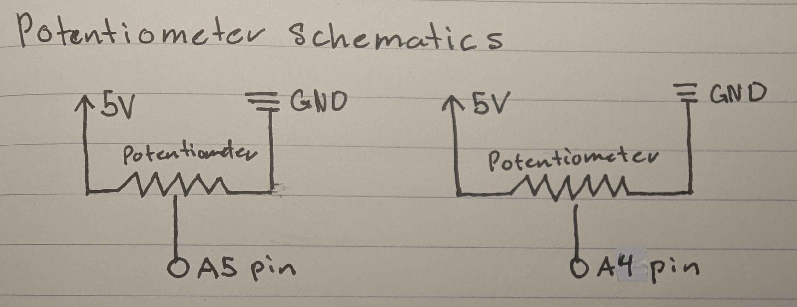
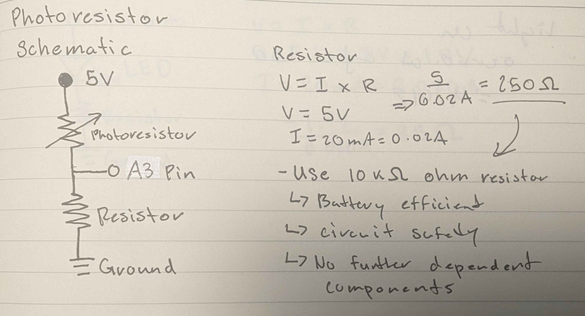
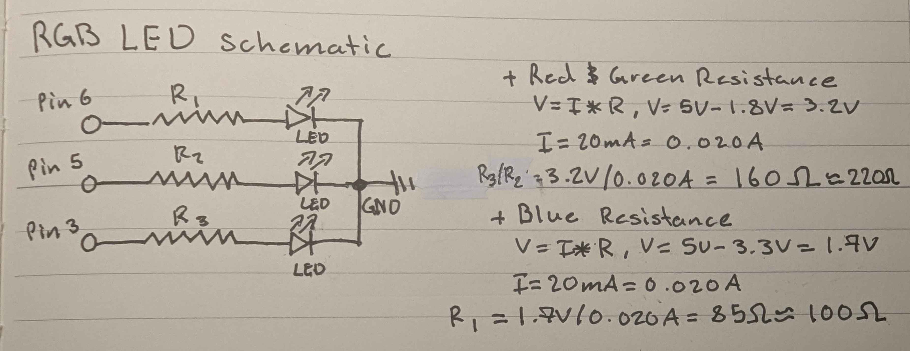
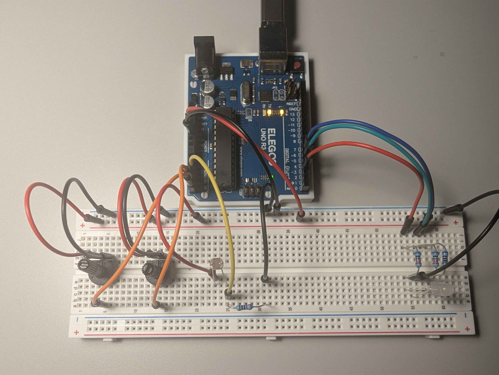
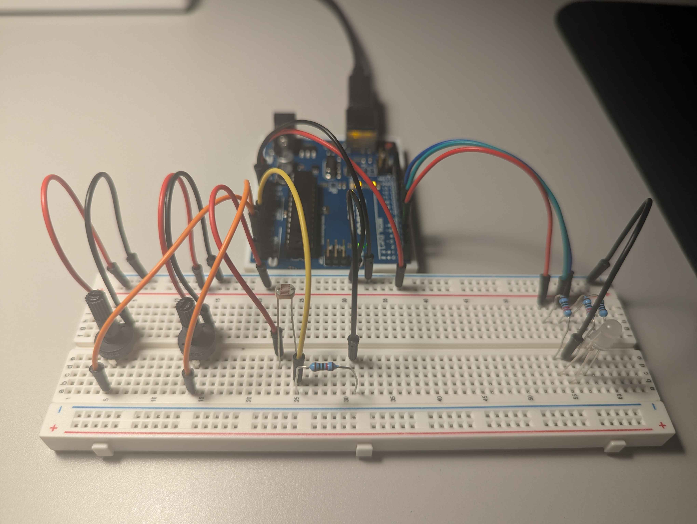

Schematics


For our first two inputs, we use two potentiometers. Each potentiometer is connected
to the 5V rail and sinks straight to ground. We read the signal from these potentiometers
via analog pins to control two channels of the RGB LED(the red and green channels), leaving
the blue channel to be determined by the state of the photoresistor.
For our last input, the photoresistor is connected to the 5V rail in order to always receive a constant source of power for the photoresistor, which is then read via an analog pin inside the voltage divider. As we are simply reading an analog signal from the photoresistor, we use a 10k-ohm resistor in order to ensure the circuit is both safe and energy efficient.
For our last input, the photoresistor is connected to the 5V rail in order to always receive a constant source of power for the photoresistor, which is then read via an analog pin inside the voltage divider. As we are simply reading an analog signal from the photoresistor, we use a 10k-ohm resistor in order to ensure the circuit is both safe and energy efficient.

We connect the RGB LED to 5V for each channel (red, green, and blue) while using three
PWM pin outs to allow analog writes for color mixing to occur. The resistances are
derived based on the LED forward voltages and a 20mA target current, resulting in 160
ohms for the red and green channels and 85 ohms for the blue channel. However, we use the
closest standard resistor values, which are 220 ohms for red and green and 100 ohms for
blue.
Arduino Code Structure
/*
Octavio Badillo
2/18/2025
This program controls an RGB LED via serial input in the format. he LED updates
when ENTER is pressed, and clears when SPACEBAR is pressed on a hosted local site.
*/
// Constants
int redPin = 3;
int greenPin = 5;
int bluePin = 6;
int pins[] = {redPin, greenPin, bluePin};
// Variables
int redValue;
int greenValue;
int blueValue;
// Initializes serial communication and setups LED pins
void setup() {
for(int i = 0; i < 3; i ++) { // Loop through the setup pins array
pinMode(pins[i], OUTPUT); // Set each LED pin as an output
}
Serial.begin(9600); // Start serial communication
}
// Continuously reads serial input and updates RGB LED
void loop() {
// Check if data is available from JS
if (Serial.available() > 0) { // Checks if there is incoming serial data
String input = Serial.readStringUntil('\n'); // Read inputted serial data until newline
if (input == "clear") { // If the spacebar was pressed, reset RGB values
redValue = 0;
greenValue = 0;
blueValue = 0;
} else { // Assign RGB values
int index1 = input.indexOf(',');
int index2 = input.lastIndexOf(',');
// Extract and convert string RGB values to integers
redValue = input.substring(0, index1).toInt();
greenValue = input.substring(index1 + 1, index2).toInt();
blueValue = input.substring(index2 + 1).toInt();
}
// Apply extracted values to RGB LED
analogWrite(redPin, redValue);
analogWrite(greenPin, greenValue);
analogWrite(bluePin, blueValue);
}
// Formatting data from 10-bit to 8-bit from each inputs respective pin
int potOneData = map(constrain(analogRead(A5), 0, 1023), 0, 1023, 0, 255);
int potTwoData = map(constrain(analogRead(A4), 0, 1023), 0, 1023, 0, 255);
int ldrData = map(constrain(analogRead(A3), 0, 1023), 0, 1023, 0, 255);
// Formatted input data to be sent
Serial.print(potOneData);
Serial.print(",");
Serial.print(potTwoData);
Serial.print(",");
Serial.println(ldrData);
// Delay for stable readings
delay(100);
}
p5js Code Structure
/*
Octavio Badillo
2/18/2025
This program reads RGB data from an Arduino and visualizes it as bar graphs.
Pressing ENTER sends updated RGB values while SPACEBAR clears the LEDs on
the Arduino.
*/
// Constants
const BAUD_RATE = 9600;
// Global Variables
let port, connectBtn;
// Initializes serial communication and sets up the canvas
function setup() {
setupSerial();
createCanvas(windowWidth, windowHeight);
textFont("system-ui", 50);
textStyle(BOLD);
textAlign(CENTER, CENTER);
}
// Updates and displays RGB bar based on the Arduino's serial input
function draw() {
// Ensure the port is open and read incoming data, else exit draw loop
const portIsOpen = checkPort();
if (!portIsOpen) return;
let str = port.readUntil("\n");
if (str.length == 0) return;
// Retrieve and convert each value to a number type
let rgbArray = str.trim().split(",");
red = Number(rgbArray[0]);
green = Number(rgbArray[1]);
blue = Number(rgbArray[2]);
// Draws the bars for the current state of the inputs
clear();
drawBars();
}
// Draws three bars representing the RGB values
function drawBars() {
// Bar Position Variables
let barWidth = width / 10;
let maxHeight = height * 0.6;
let xOffset = width / 4;
let yBase = height * 0.8;
// Draw each RGB bar with its corresponding parameters
drawBar(xOffset, yBase, barWidth, maxHeight, red, color(255, 0, 0), "R: " + red);
drawBar(xOffset * 2, yBase, barWidth, maxHeight, green, color(0, 255, 0), "G: " + green);
drawBar(xOffset * 3, yBase, barWidth, maxHeight, blue, color(0, 0, 255), "B: " + blue);
}
// Base function for creating a bar
function drawBar(x, yBase, barWidth, maxHeight, RGBvalue, barColor, label) {
// Map RGB-Value to max bar height
let barHeight = map(RGBvalue, 0, 255, 0, maxHeight);
// Constructs a bar with its respective parameters
fill(barColor);
rect(x - barWidth / 2, yBase - barHeight, barWidth, barHeight);
// Display RGB label
text(label, x, yBase - maxHeight - 40);
textSize(40);
}
// Detect key press and sends corresponding data to the Arduino
function keyPressed() {
if (!port.opened()) return; // Exits if serial port is not open
if (keyCode === ENTER) {
port.write(`${red},${green},${blue}\n`); // Sends current RGB values
} else if (keyCode === 32) { // KeyCode 32 represents spacebar
port.write("clear\n"); // Resets RGB values for LED on Arduino
}
}
/* Helper Functions */
// Sets up the serial connection and creates a connect button
function setupSerial() {
port = createSerial();
let usedPorts = usedSerialPorts();
if (usedPorts.length > 0) {
port.open(usedPorts[0], BAUD_RATE);
}
connectBtn = createButton("Connect to Arduino").addClass("button");
connectBtn.position(20,20);
connectBtn.mouseClicked(onConnectButtonClicked);
}
// Checks if the serial port is open and updates the button text
function checkPort() {
if (!port.opened()) {
connectBtn.html("Connect to Arduino");
return false;
} else {
connectBtn.html("Disconnect");
return true;
}
}
// Toggles the serial connection when the button is clicked
function onConnectButtonClicked() {
if (!port.opened()) {
port.open(BAUD_RATE);
} else {
port.close();
clear();
}
}
Talking to the Web Circuit
 Web Circuit in Action!